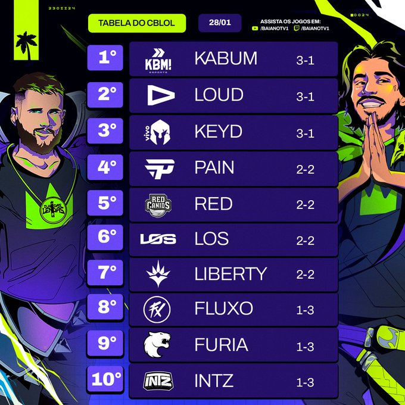

O conteudo
Já tínhamos em mente que o cenário brasileiro de League of Legends não é tão favoravel em níveis de habilidades em comparação com outras regiões, a respeito de nossos jogadores. Com isso, nessas lindas primeiras semanas do nosso torneio regional de League of Legends, nos gerou a unica coisa que nosso cenário pode oferecer com qualidade, nada mais e nada menos que um belo e maravilhoso CONTEUDO.
Win Rate Abusivo
Uma das incriveis situações que esse torneio nos proporciona, é o incrivel talento de tornar uma side do game, em uma tremenda arma de winrate. Como todos nós sabemos, tem de fato um lado favoravel para todas as ligas que abusam do lado escolhido para se beneficiar, mas nenhuma conseguiu o fato historico de 100% de winrate para um dos lados. Todos os times do torneio teve 100% de winrate na blue side escolhida, tornando-se o lado favorito para os times nesse split.
